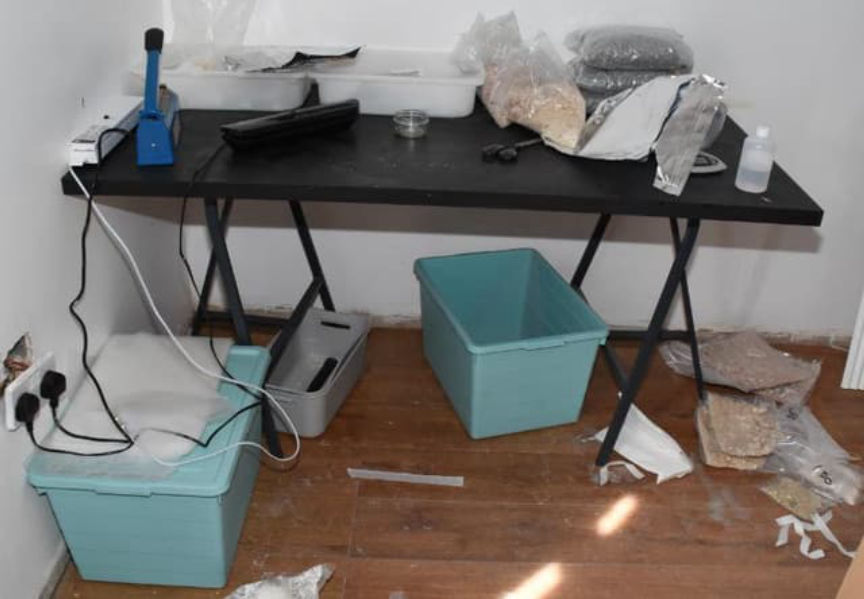
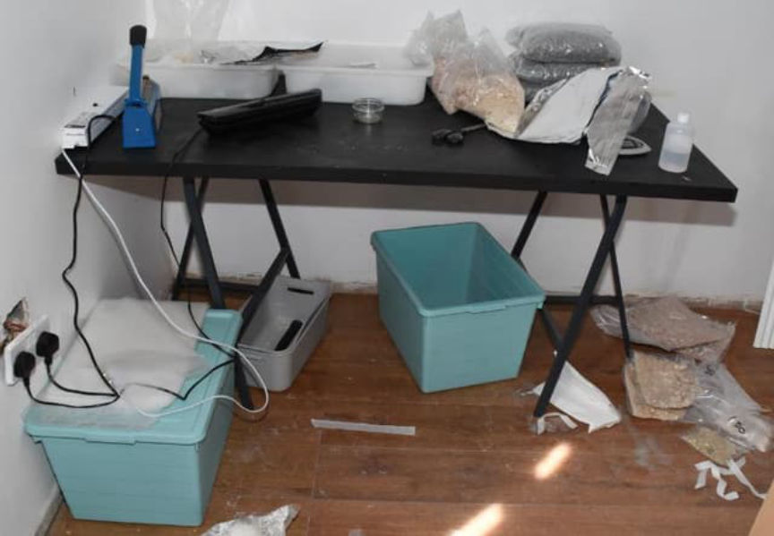

UK: Darkweb Drug Trafficker Sentenced to Prison
~3 min read | Published on 2022-03-19, tagged Darkweb-Vendor, Sentenced using 512 words.
A member of a “global darkweb organized crime group” has been sentenced to nine years in prison for shipping kilograms of drugs to buyers around the globe.
Mubinar Rahman, 26, mailed more than 104 packages of MDMA to global destinations as a part of an organized darkweb drug trafficking operation, according to the National Crime Agency (NCA). The defendant pleaded guilty at Newcastle Crown Court in October 2020 to trafficking drugs and possession of Class A drugs with intent to supply.
Between June 29, 2020, and July 27, 2020, the NCA and Border Force intercepted 39 packages shipped by Rahman. Rahman had addressed the packages to buyers in the UK, United States, Israel, Norway, Thailand, Hong Kong, and elsewhere. The investigation resulted in seizures of 90 kilograms of MDMA, 134 kilograms of amphetamine, and more than 6,000 Valium and Xanax pills. In total, the value of the drugs shipped by Rahman was $1,036,025 (or 6,590,367 CNY/59,694,066 INR).
The investigation involved cooperation with the United States Homeland Security Investigations (HSI).
On 28 July 2020, NCA officers watched Rahman park his 2010 BMW outside a house associated with the drug trafficking operation. Officers arrested Rahman after he had returned to his car. During a search of the BMW, officers found ten packages addressed to international customers. A subsequent search of the house resulted in the discovery of 25 kilograms of MDMA, 134 kilograms of amphetamine sulfate, packaging equipment, and other materials often used by drug traffickers.

Rahman refused to answer questions asked by NCA officers. However, according to the NCA, messages shared on EncroChat, the encrypted communications network hacked by law enforcement during Operation Venetic “helped officers identify other suspects involved in the darkweb drugs network.”
Law enforcement arrested two additional suspects in April 2021 on suspicion of importing and supplying Class A, B, and C drugs. Investigators identified two more suspects who are allegedly on the run at the time of publication.
NCA Branch Commander Martin Clarke:
“Rahman was working for a well-established criminal network which exploited the fast parcel system to move illegal drugs. Working with key partners at home such as Border Force and abroad with HSI, we have removed a significant amount of Class A from circulation and denied Rahman’s organized crime group the chance to plough profits from those drugs into more criminality. We are determined to do all we can to disrupt all drugs supply routes in and out of the UK.”
Tim Hemker, attache at the US Homeland Security Investigations:
“Homeland Security Investigations is proud of our strong partnership with the National Crime Agency.
“Today’s sentencing is the result of our agencies’ exemplary collaboration to hold criminals on the dark web accountable for illegally selling and shipping narcotics overseas and putting countless individuals in danger.
“We will continue to work together to keep drugs off our streets and our communities safe.”
archive.is/archive.org
If this guy is a part of a large-scale DTO that operated on markets with the kind of weight described in the article, I think somebody will know the vendor username.
Mubinar Rahman, 26, mailed more than 104 packages of MDMA to global destinations as a part of an organized darkweb drug trafficking operation, according to the National Crime Agency (NCA). The defendant pleaded guilty at Newcastle Crown Court in October 2020 to trafficking drugs and possession of Class A drugs with intent to supply.
Mubinar Rahman is an “accountancy student” living in South Shields.
Between June 29, 2020, and July 27, 2020, the NCA and Border Force intercepted 39 packages shipped by Rahman. Rahman had addressed the packages to buyers in the UK, United States, Israel, Norway, Thailand, Hong Kong, and elsewhere. The investigation resulted in seizures of 90 kilograms of MDMA, 134 kilograms of amphetamine, and more than 6,000 Valium and Xanax pills. In total, the value of the drugs shipped by Rahman was $1,036,025 (or 6,590,367 CNY/59,694,066 INR).
The investigation involved cooperation with the United States Homeland Security Investigations (HSI).
On 28 July 2020, NCA officers watched Rahman park his 2010 BMW outside a house associated with the drug trafficking operation. Officers arrested Rahman after he had returned to his car. During a search of the BMW, officers found ten packages addressed to international customers. A subsequent search of the house resulted in the discovery of 25 kilograms of MDMA, 134 kilograms of amphetamine sulfate, packaging equipment, and other materials often used by drug traffickers.

The court called Rahman the “warehouse and distribution hub manager.”
Rahman refused to answer questions asked by NCA officers. However, according to the NCA, messages shared on EncroChat, the encrypted communications network hacked by law enforcement during Operation Venetic “helped officers identify other suspects involved in the darkweb drugs network.”
Law enforcement arrested two additional suspects in April 2021 on suspicion of importing and supplying Class A, B, and C drugs. Investigators identified two more suspects who are allegedly on the run at the time of publication.
NCA Branch Commander Martin Clarke:
“Rahman was working for a well-established criminal network which exploited the fast parcel system to move illegal drugs. Working with key partners at home such as Border Force and abroad with HSI, we have removed a significant amount of Class A from circulation and denied Rahman’s organized crime group the chance to plough profits from those drugs into more criminality. We are determined to do all we can to disrupt all drugs supply routes in and out of the UK.”
Tim Hemker, attache at the US Homeland Security Investigations:
“Homeland Security Investigations is proud of our strong partnership with the National Crime Agency.
“Today’s sentencing is the result of our agencies’ exemplary collaboration to hold criminals on the dark web accountable for illegally selling and shipping narcotics overseas and putting countless individuals in danger.
“We will continue to work together to keep drugs off our streets and our communities safe.”
archive.is/archive.org
If this guy is a part of a large-scale DTO that operated on markets with the kind of weight described in the article, I think somebody will know the vendor username.